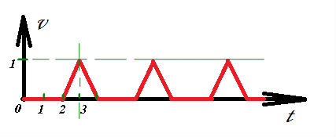
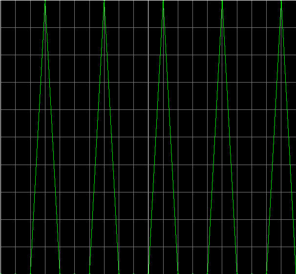

MSC.MARC 2010表格：创建方式¶
发布于：2012-10-18 | 分类：finite element analysis
Marc中材料属性、边界条件、接触条件的刚体运动控制部分都会用到表格曲线Table。一个表格最多有4个自变量（v1,v2,v3,v4），自变量类型主要有时间、温度、等效应变、坐标等，可以满足绝大部分需求。因此，Table的灵活运用可以满足各种特定工况模拟的需要。
本文是Msc.marc 2010表格介绍的第一部分——创建方法，通常有两种创建表格曲线的方式：
DATA POINTS方式——直接输入数据点的坐标，当数据量较大时可以通过READ命令导入FORMULA方式——通过曲线方程建立曲线
本文着重介绍使用FORMULA方式创建表格的一些知识点1。
常量¶
| 符号 | 含义 |
|---|---|
| pi | π |
| e | exponent |
| tz | offset temperature entered via the PARAMETERS model definition option |
| q | Activation energy entered via MATERIAL DATA model definition option |
| r | Universal gas constant entered via the PARAMETERS model definition option |
| sb | Stefan Boltzman constant entered via the PARAMETERS model definition option |
Note
v1,v2,v3,v4分别代表相应的自变量。
数学运算符¶
| 符号 | 含义 |
|---|---|
| + | addition |
| - | subtraction |
| * | multiplication |
| / | division |
| ^ | exponential |
| ! | factor |
| % | mod |
数学函数¶
| 函数名 | 含义 | 说明 |
|---|---|---|
| dcos | cosine (x) | x in radians |
| dsin | sine (x) | x in radians |
| dtan | tangent (x) | x in radians |
| dacos | inverse cosine (x) | f in radians |
| dasin | inverse sine (x) | f in radians |
| datan | inverse tangent (x) | f in radians |
| datan2 | inverse tangent (x,y) | f in radians |
| 函数名 | 含义 | 说明 |
|---|---|---|
| cos | cosine (x) | x in degrees |
| sin | sine (x) | x in degrees |
| tan | tangent (x) | x in degrees |
| acos | inverse cosine (x) | f in degrees |
| asin | inverse sine (x) | f in degrees |
| atan | inverse tangent (x) | f in degrees |
| atan2 | inverse tangent (x,y) | f in degrees |
| 函数名 | 含义 |
|---|---|
| cosh | hyperbolic cosine |
| sinh | hyperbolic sine |
| tanh | hyperbolic tangent |
| acosh | inverse hyperbolic cosine |
| asinh | inverse hyperbolic sine |
| atanh | inverse hyperbolic tangent |
| 函数名 | 含义 |
|---|---|
| log | log based 10 |
| ln | natural log |
| exp | exponent |
| sqrt | square root |
| rad | convert degrees to radians |
| deg | convert radians to degrees |
| abs | obtain absolute value |
| int | truncates the value to whole |
| frac | take the fractional value |
| max | takes the maximal value |
| min | takes the minimal value |
| mod | return the remainder of x, based on y mod(x,y) = x - y * int (x/y) |
实例说明¶
假设某刚体运动的速度-时间曲线如下图所示，延续周期数为100。

虽然一个周期内的曲线比较简单，可以直接输入；但是由于周期数太多，手动输入比较麻烦，因此考虑采用函数输入的方式。
该曲线无法用一个初等函数解析表达，但观察发现：一个周期内只有t=3这一个点的函数值等于1，因此对于第一个周期的t=0,1,2,3可以用max(v1-2, 0)实现；其他周期则通过v1%4转换到第一周期内，于是表达式为：
max(v1%4-2,0)
理论上应当实现了，可是在输入过程中发现，Marc自动将max转换为mav1了，从而导致公式输入错误。这貌似是一个BUG。猜测原因为：公式接受的自变量为v1，因此marc默认将可能误输入的字符x转换为v1。
既然max()函数有问题，那就使用min()函数按照同样的思路实现即可：
-min(2-v1%4,0)

-
Marc® 2010 Volume A: Theory and User Information ↩